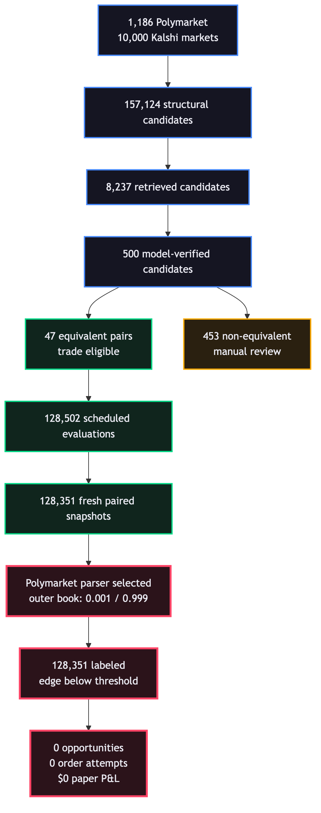

Runtime
7.51h
$5,000 paper balance
Nightwatch did not merely “find no edge.” It selected Polymarket’s outermost prices as top of book—typically 0.001 / 0.999—then rejected every one of 128,351 fresh evaluations. The zero-trade result cannot be used as evidence that the shift contained no executable arbitrage.
The venue returned bids ascending and asks descending. Its metadata independently reported the same true top of book.
The app selected index zero on each side after truncating to ten levels. It therefore manufactured a 99.8¢ spread on both YES and NO.

128,502 due → 128,351 fresh → 128,351 edge rejects → 0 opportunities → 0 order attempts.
146 paired timeouts · 5 stale Kalshi books
The final log checkpoint showed 9,381 scans across 1,192 market states and 168 event groups, also with zero opportunities.
This path consumed the same incorrectly normalized Polymarket books, so its zero is also not trustworthy.
The final semantic cycle processed 500 candidates: 47 equivalent and 453 non-equivalent. The app persisted all 47 equivalent pairs plus only the top 100 review candidates per cycle; across the shift that left 110 distinct review rows. The unretained review rows cannot be reconstructed after shutdown.
| # | Polymarket | Kalshi | Relation | Retrieval | Confidence | Execution status | Seen |
|---|---|---|---|---|---|---|---|
| 1 | Will Mark Cuban win the 2028 Democratic presidential nomination?0x9d4f94f82de9d13ff1d3318639ab9000ee2533949e525343156f374fb00bd9b1 | 2028 Democratic presidential nominee — Will Mark Cuban be the Democratic Presidential nominee in 2028?KXPRESNOMD-28-MC | equivalent | 0.948 | 0.98 | trade eligible | 29 |
| 2 | Will Erika Kirk win the 2028 Republican presidential nomination?0x7abed80b88301210ee83b7b14ec41bc9a5161e1af07254fbb26c6e2bf7182766 | 2028 Republican presidential nominee — Will Erika Kirk be the nominee for the Presidency for the Republican party?KXPRESNOMR-28-EKIR | equivalent | 0.946 | 0.98 | trade eligible | 29 |
| 3 | Will Elissa Slotkin win the 2028 Democratic presidential nomination?0xe50c71cc5e2372bf0f6194a02e51459dd03b2c7b2d78a0d4650e5f36c425338b | 2028 Democratic presidential nominee — Will Elissa Slotkin be the Democratic Presidential nominee in 2028?KXPRESNOMD-28-ESLO | equivalent | 0.946 | 0.98 | trade eligible | 30 |
| 4 | Will Jared Polis win the 2028 Democratic presidential nomination?0x8fbcb151e2c988df5a43abb02298014b7daf34c008f3eed9188dd16a2a19bec1 | 2028 Democratic presidential nominee — Will Jared Polis be the Democratic Presidential nominee in 2028?KXPRESNOMD-28-JP | equivalent | 0.945 | 0.98 | trade eligible | 30 |
| 5 | Will Robert F. Kennedy Jr. win the 2028 Republican presidential nomination?0xc510176cf39d73295354fc797d84b510d050b45d29d6c9735ee18cdbc4fd6463 | 2028 Republican presidential nominee — Will Robert F. Kennedy Jr. be the nominee for the Presidency for the Republican party?KXPRESNOMR-28-RFK | equivalent | 0.945 | 0.98 | trade eligible | 30 |
| 6 | Will Vivek Ramaswamy win the 2028 Republican presidential nomination?0xd997dc2a212a7d6673375a3b016db1fb214247142f8cde0cbf07f8e6d789877c | 2028 Republican presidential nominee — Will Vivek Ramaswamy be the nominee for the Presidency for the Republican party?KXPRESNOMR-28-VR | equivalent | 0.945 | 0.98 | trade eligible | 29 |
| 7 | Will Gretchen Whitmer win the 2028 Democratic presidential nomination?0xe39adea057926dc197fe30a441f57a340b2a232d5a687010f78bba9b6e02620f | 2028 Democratic presidential nominee — Will Gretchen Whitmer be the Democratic Presidential nominee in 2028?KXPRESNOMD-28-GW | equivalent | 0.944 | 0.98 | trade eligible | 30 |
| 8 | Will Stephen A. Smith win the 2028 Democratic presidential nomination?0xc8f1cf5d4f26e0fd9c8fe89f2a7b3263b902cf14fde7bfccef525753bb492e47 | 2028 Democratic presidential nominee — Will Stephen A. Smith be the Democratic Presidential nominee in 2028?KXPRESNOMD-28-SAS | equivalent | 0.944 | 0.98 | trade eligible | 30 |
| 9 | Will Tim Walz win the 2028 Democratic presidential nomination?0x3265b10daeb30dbcc3214bd02e488551d0a5d3028392f4152e4750b943fbfc91 | 2028 Democratic presidential nominee — Will Tim Walz be the Democratic Presidential nominee in 2028?KXPRESNOMD-28-TW | equivalent | 0.943 | 0.98 | trade eligible | 30 |
| 10 | Will Pete Hegseth win the 2028 Republican presidential nomination?0x5f3b3456b2d6ef0d6f15d7492162725057be78d738d2465456e2835f1d89046c | 2028 Republican presidential nominee — Will Pete Hegseth be the nominee for the Presidency for the Republican party?KXPRESNOMR-28-PHEG | equivalent | 0.943 | 0.98 | trade eligible | 29 |
| 11 | Will Josh Shapiro win the 2028 Democratic presidential nomination?0xd65891729ce093cc12236856837eba1a0872fc7998fd4294c21346f7db68079c | 2028 Democratic presidential nominee — Will Josh Shapiro be the Democratic Presidential nominee in 2028?KXPRESNOMD-28-JS | equivalent | 0.942 | 0.98 | trade eligible | 30 |
| 12 | Will Ruben Gallego win the 2028 Democratic presidential nomination?0x98933c78b5e277b62d91a6c174b412218de000b54c4c67ec8673bf561cec6e81 | 2028 Democratic presidential nominee — Will Ruben Gallego be the Democratic Presidential nominee in 2028?KXPRESNOMD-28-RGAL | equivalent | 0.942 | 0.98 | trade eligible | 30 |
| 13 | Will Gina Raimondo win the 2028 Democratic presidential nomination?0xcb239105ed21a2420ba4d85090b9bc32755c56601ffdc528afd17fd6282fe930 | 2028 Democratic presidential nominee — Will Gina Raimondo be the Democratic Presidential nominee in 2028?KXPRESNOMD-28-GR | equivalent | 0.942 | 0.98 | trade eligible | 30 |
| 14 | Will Andy Beshear win the 2028 Democratic presidential nomination?0x1d519b87999e3d4e90e1e8f57b5eee73a0ba488ff3fdb70867f294733aba84a9 | 2028 Democratic presidential nominee — Will Andy Beshear be the Democratic Presidential nominee in 2028?KXPRESNOMD-28-AB | equivalent | 0.942 | 0.98 | trade eligible | 30 |
| 15 | Will Gavin Newsom win the 2028 Democratic presidential nomination?0x0f49db97f71c68b1e42a6d16e3de93d85dbf7d4148e3f018eb79e88554be9f75 | 2028 Democratic presidential nominee — Will Gavin Newsom be the Democratic Presidential nominee in 2028?KXPRESNOMD-28-GN | equivalent | 0.942 | 0.98 | trade eligible | 30 |
| 16 | Will Ro Khanna win the 2028 Democratic presidential nomination?0x20d0bc282552ac5ec6f61cd7101cb42a5948cae07e7651bdf40ede1a8b2c5eac | 2028 Democratic presidential nominee — Will Ro Khanna be the Democratic Presidential nominee in 2028?KXPRESNOMD-28-RKHA | equivalent | 0.942 | 0.98 | trade eligible | 29 |
| 17 | Will J.D. Vance win the 2028 Republican presidential nomination?0x18b1c135d0a40c5894da9412e77311827d9caf16cf4cd6591b247a34730af919 | 2028 Republican presidential nominee — Will J.D. Vance be the nominee for the Presidency for the Republican party?KXPRESNOMR-28-JDV | equivalent | 0.941 | 0.98 | trade eligible | 30 |
| 18 | Will Nikki Haley win the 2028 Republican presidential nomination?0xd7a0d72b19ca48b06b0029684677f581e32f133c367d7a19c2f1e4ad07066af7 | 2028 Republican presidential nominee — Will Nikki Haley be the nominee for the Presidency for the Republican party?KXPRESNOMR-28-NH | equivalent | 0.941 | 0.98 | trade eligible | 29 |
| 19 | Will Jasmine Crockett win the 2028 Democratic presidential nomination?0x3cd6e52603d80ddbbdac9b1a4d43f9b7faa6aae4fae4d0fdfad3bd58454da7d3 | 2028 Democratic presidential nominee — Will Jasmine Crockett be the nominee for the Presidency for the Democratic party?KXPRESNOMD-28-JCRO | equivalent | 0.941 | 0.98 | trade eligible | 30 |
| 20 | Will J.B. Pritzker win the 2028 Democratic presidential nomination?0xe883f2fda25a605a184bb5fe583afce6cc21ea0b348b6a3728ec3067553c548d | 2028 Democratic presidential nominee — Will J.B. Pritzker be the Democratic Presidential nominee in 2028?KXPRESNOMD-28-JBP | equivalent | 0.940 | 0.98 | trade eligible | 29 |
| 21 | Will Zohran Mamdani win the 2028 Democratic presidential nomination?0x3535fb2f4aef6619dde8b367cb5e5d209526bb496d5d9778428c58a0252435e3 | 2028 Democratic presidential nominee — Will Zohran Mamdani be the Democratic Presidential nominee in 2028?KXPRESNOMD-28-ZMAM | equivalent | 0.940 | 0.98 | trade eligible | 29 |
| 22 | Will Liz Cheney win the 2028 Democratic presidential nomination?0x46dbd48d6bde5b81edb480e0f676a2cdda6c6b592c4d86a9367c7ad5a9870195 | 2028 Democratic presidential nominee — Will Liz Cheney be the Democratic Presidential nominee in 2028?KXPRESNOMD-28-LC | equivalent | 0.940 | 0.98 | trade eligible | 29 |
| 23 | Will Kristi Noem win the 2028 Republican presidential nomination?0x5f1b1caf70eb994bfff2986727a05a3ac9f7ec8b0da4017f7732596d023e5a07 | 2028 Republican presidential nominee — Will Kristi Noem be the nominee for the Presidency for the Republican party?KXPRESNOMR-28-KNOE | equivalent | 0.939 | 0.98 | trade eligible | 30 |
| 24 | Will Katie Britt win the 2028 Republican presidential nomination?0x61a1278884fa70d68d4bcaaf72fad55bbdb063cac28c6947472ca91635fab10f | 2028 Republican presidential nominee — Will Katie Britt be the nominee for the Presidency for the Republican party?KXPRESNOMR-28-KB | equivalent | 0.939 | 0.98 | trade eligible | 29 |
| 25 | Will Mark Kelly win the 2028 Democratic presidential nomination?0x36db77c539bcc8c7bf0686c1b99f30c5a5eed1f53d3b3a27a071550c81f83701 | 2028 Democratic presidential nominee — Will Mark Kelly be the Democratic Presidential nominee in 2028?KXPRESNOMD-28-MK | equivalent | 0.939 | 0.98 | trade eligible | 29 |
| 26 | Will Marjorie Taylor Greene win the 2028 Republican presidential nomination?0x17902b9490c6a73152772316b4705935c5c6801ba269f2afc81686532e34fb9a | 2028 Republican presidential nominee — Will Marjorie Taylor Greene be the nominee for the Presidency for the Republican party?KXPRESNOMR-28-MTG | equivalent | 0.938 | 0.98 | trade eligible | 29 |
| 27 | Will Tulsi Gabbard win the 2028 Republican presidential nomination?0x9cd77217b2ab264fe4f6d302f662c0a91f349fe5798f1f98d70bb2311712791b | 2028 Republican presidential nominee — Will Tulsi Gabbard be the nominee for the Presidency for the Republican party?KXPRESNOMR-28-TG | equivalent | 0.938 | 0.98 | trade eligible | 29 |
| 28 | Will John Fetterman win the 2028 Democratic presidential nomination?0xca1d1139b0c3a29983407f499476ae642482788e841a277eb86faeeb9fa4a85c | 2028 Democratic presidential nominee — Will John Fetterman be the Democratic Presidential nominee in 2028?KXPRESNOMD-28-JF | equivalent | 0.938 | 0.98 | trade eligible | 30 |
| 29 | Will Chris Murphy win the 2028 Democratic presidential nomination?0xc720fcfa9e29346a976902f87e0f0f3bdc31d43af501b4fdef4f1780a30dd359 | 2028 Democratic presidential nominee — Will Chris Murphy be the Democratic Presidential nominee in 2028?KXPRESNOMD-28-CMUR | equivalent | 0.938 | 0.98 | trade eligible | 30 |
| 30 | Will Cory Booker win the 2028 Democratic presidential nomination?0x1970bcce75e3674660917ae4685b433a9b1e0152d810a8d7c346dfd5e00694c2 | 2028 Democratic presidential nominee — Will Cory Booker be the Democratic Presidential nominee in 2028?KXPRESNOMD-28-CBOO | equivalent | 0.938 | 0.98 | trade eligible | 30 |
| 31 | Will Candace Owens win the 2028 Republican presidential nomination?0x8764d4aba85c6e80a4823850fe9ff2d4dc17081f3be0a50a856765d7b1cb1fe7 | 2028 Republican presidential nominee — Will Candace Owens be the nominee for the Presidency for the Republican party?KXPRESNOMR-28-COWE | equivalent | 0.938 | 0.98 | trade eligible | 30 |
| 32 | Will Byron Donalds win the 2028 Republican presidential nomination?0xd1747284d6048b2a3dcfbee489db405f36de18f9590197dd0e5c9f0c246bf050 | 2028 Republican presidential nominee — Will Byron Donalds be the nominee for the Presidency for the Republican party?KXPRESNOMR-28-BD | equivalent | 0.938 | 0.98 | trade eligible | 30 |
| 33 | Will Phil Murphy win the 2028 Democratic presidential nomination?0x29283b56d3eec6d1d89fff51793d9d2e01579d2379b1d3e9ebda175d3561e809 | 2028 Democratic presidential nominee — Will Phil Murphy be the Democratic Presidential nominee in 2028?KXPRESNOMD-28-PHI | equivalent | 0.937 | 0.98 | trade eligible | 30 |
| 34 | Will Marco Rubio win the 2028 Republican presidential nomination?0x21ad31a46bfaa51650766eff6dc69c866959e32d965ffb116020e37694b6317d | 2028 Republican presidential nominee — Will Marco Rubio be the nominee for the Presidency for the Republican party?KXPRESNOMR-28-MR | equivalent | 0.936 | 0.98 | trade eligible | 30 |
| 35 | Will LeBron James win the 2028 Democratic presidential nomination?0x8b203037c7c0e21b500314f8398d2a8ea294b7ce1f4f9185f426425a3505bc45 | 2028 Democratic presidential nominee — Will Lebron James be the Democratic Presidential nominee in 2028?KXPRESNOMD-28-LJAM | equivalent | 0.936 | 0.98 | trade eligible | 30 |
| 36 | Will Jon Stewart win the 2028 Democratic presidential nomination?0xfee07be730188c94cd3644ed6f107fa3ea2dfab9989ce8d39aeeae064766abe3 | 2028 Democratic presidential nominee — Will Jon Stewart be the Democratic Presidential nominee in 2028?KXPRESNOMD-28-JSTE | equivalent | 0.936 | 0.98 | trade eligible | 30 |
| 37 | Will Josh Hawley win the 2028 Republican presidential nomination?0x4d4bceee5f59f75230c6438f69fc913a6da7afa4098ce0734655045c02a730fc | 2028 Republican presidential nominee — Will Josh Hawley be the nominee for the Presidency for the Republican party?KXPRESNOMR-28-JH | equivalent | 0.936 | 0.98 | trade eligible | 29 |
| 38 | Will Pete Buttigieg win the 2028 Democratic presidential nomination?0x4c325469d9b516ef4e6b8f73a81a12607dec075e3c2fd454f91765aaeafc4760 | 2028 Democratic presidential nominee — Will Pete Buttigieg be the Democratic Presidential nominee in 2028?KXPRESNOMD-28-PB | equivalent | 0.936 | 0.98 | trade eligible | 30 |
| 39 | Will Alexandria Ocasio-Cortez win the 2028 Democratic presidential nomination?0xe6bcc2f1dd025ce5e1833190f7c60a71171c94f805df55b9ab0ded695ec93565 | 2028 Democratic presidential nominee — Will Alexandria Ocasio-Cortez be the Democratic Presidential nominee in 2028?KXPRESNOMD-28-AOC | equivalent | 0.935 | 0.98 | trade eligible | 30 |
| 40 | Will Raphael Warnock win the 2028 Democratic presidential nomination?0xdce84960dce38aa4a5800a5eba7c9ac34d2ce49ba9d44c42572c472d468af264 | 2028 Democratic presidential nominee — Will Raphael Warnock be the Democratic Presidential nominee in 2028?KXPRESNOMD-28-RW | equivalent | 0.935 | 0.98 | trade eligible | 30 |
| 41 | Will Sarah Huckabee Sanders win the 2028 Republican presidential nomination?0x00ad3bb5284b0b2314b1a2d42812fe292f606619c6278bd95c9d905816c240f6 | 2028 Republican presidential nominee — Will Sarah Huckabee Sanders be the nominee for the Presidency for the Republican party?KXPRESNOMR-28-SHS | equivalent | 0.934 | 0.98 | trade eligible | 29 |
| 42 | Will Greg Abbott win the 2028 Republican presidential nomination?0x214093035e429b91df322bd20c55d9f611f741f67472a63f7623a9afc0cffa57 | 2028 Republican presidential nominee — Will Greg Abbott be the nominee for the Presidency for the Republican party?KXPRESNOMR-28-GA | equivalent | 0.934 | 0.98 | trade eligible | 29 |
| 43 | Will Ron DeSantis win the 2028 Republican presidential nomination?0x64d31a2af85518c6718a5757a35b840f08eca20c1e22c0eb1e96ec01cc55b8b6 | 2028 Republican presidential nominee — Will Ron DeSantis be the nominee for the Presidency for the Republican party?KXPRESNOMR-28-RDS | equivalent | 0.934 | 0.98 | trade eligible | 30 |
| 44 | Will Brian Kemp win the 2028 Republican presidential nomination?0x42631e1a8c8e6389422b58b8e15b1b551892b9833651aa3bab25afab124354b5 | 2028 Republican presidential nominee — Will Brian Kemp be the nominee for the Presidency for the Republican party?KXPRESNOMR-28-BK | equivalent | 0.934 | 0.98 | trade eligible | 30 |
| 45 | Will Elise Stefanik win the 2028 Republican presidential nomination?0x655b4bfdfa55a95c24d6e9bf7e7cd62f1b57da9a1f4c7f40f090b8ba847dffa2 | 2028 Republican presidential nominee — Will Elise Stefanik be the nominee for the Presidency for the Republican party?KXPRESNOMR-28-ES | equivalent | 0.933 | 0.98 | trade eligible | 29 |
| 46 | Will James Talarico win the 2028 Democratic presidential nomination?0xb91be12388b3d4079c3ed9b5783cb42d8c33051d37746a49300227e0f45fc089 | 2028 Democratic presidential nominee — Will James Talarico be the Democratic Presidential nominee in 2028?KXPRESNOMD-28-JTAL | equivalent | 0.933 | 0.98 | trade eligible | 30 |
| 47 | Will Glenn Youngkin win the 2028 Republican presidential nomination?0xd0c4c60c8e68ee15974df3aa7d217225e98020fab9fcdb32d10f8e3d285e1619 | 2028 Republican presidential nominee — Will Glenn Youngkin be the nominee for the Presidency for the Republican party?KXPRESNOMR-28-GY | equivalent | 0.933 | 0.98 | trade eligible | 30 |
| 48 | Will the Democrats win the Idaho Senate race in 2026?0xbf4144ee69c04fafaf23f455cee1e240cb4a643aec6276ef6159929a4a070280 | Idaho Senate winner? (2028) — Will Democratics win the Senate race in Idaho?SENATEID-28-D | independent | 0.894 | 1.00 | blocked: different contract | 7 |
| 49 | Will the Democrats win the South Carolina Senate race in 2026?0x4de72138204727d2821bff847d8158819ab5b591db1b5b263676126cbb3a0430 | South Carolina Senate winner? (2028) — Will Democratics win the Senate race in South Carolina?SENATESC-28-D | independent | 0.892 | 1.00 | blocked: different contract | 14 |
| 50 | Will the Republicans win the Florida Senate race in 2026?0xe655180a65e17b6959aa722821312de23513cba6c6d2e3a55f47f198977316bf | Florida Senate winner? (2028) — Will Republicans win the Senate race in Florida?SENATEFL-28-R | independent | 0.891 | 1.00 | blocked: different contract | 14 |
| 51 | Will the Democrats win the Ohio Senate race in 2026?0x968a1a79e001d49fa3ee1429e3b95eb01797587740f86d4e6becf3ab1b275bfb | Ohio Senate winner? (2028) — Will Democratics win the Senate race in Ohio?SENATEOH-28-D | independent | 0.891 | 1.00 | blocked: different contract | 7 |
| 52 | Will the Democrats win the North Carolina Senate race in 2026?0x129dbcb7d39ff8df5f0d7685a2db6400b5db37d3963914486fbb7fd2bc96a923 | North Carolina Senate winner? (2028) — Will Democratics win the Senate race in North Carolina?SENATENC-28-D | independent | 0.891 | 1.00 | blocked: different contract | 13 |
| 53 | Will the Democrats win the Florida Senate race in 2026?0x0465cd005a54781e052b679e2c42c7ae5b772490fdda54316f157bf537536456 | Florida Senate winner? (2028) — Will Democratics win the Senate race in Florida?SENATEFL-28-D | independent | 0.888 | 1.00 | blocked: different contract | 10 |
| 54 | Will the Republicans win the Vermont governor race in 2026?0x6664de877892786b699c552ef88f25ff6e4828f9a847e4f40e4d6d9cd30b1485 | Vermont Governor Winner? (2028) — Will the Republican party win the governorship in VermontGOVPARTYVT-28-R | independent | 0.888 | 1.00 | blocked: different contract | 8 |
| 55 | Will Katie Britt win the 2028 Republican presidential nomination?0x61a1278884fa70d68d4bcaaf72fad55bbdb063cac28c6947472ca91635fab10f | 2028 Republican VP nominee — Will Katie Britt be the nominee for the Vice Presidency for the Republican party?KXVPRESNOMR-28-KB | independent | 0.909 | 0.99 | blocked: different contract | 22 |
| 56 | Will Kamala Harris win the 2028 Democratic presidential nomination?0x909659c9436228e2be56d5582ba6188166f2f8bf3c596335512c8f2e380d01ec | 2028 Democratic VP nominee — Will Kamala Harris be the nominee for the Vice Presidency for the Democratic party?KXVPRESNOMD-28-KH | independent | 0.909 | 0.99 | blocked: different contract | 22 |
| 57 | Will Mark Cuban win the 2028 Democratic presidential nomination?0x9d4f94f82de9d13ff1d3318639ab9000ee2533949e525343156f374fb00bd9b1 | 2028 Democratic VP nominee — Will Mark Cuban be the nominee for the Vice Presidency for the Democratic party?KXVPRESNOMD-28-MC | independent | 0.909 | 0.99 | blocked: different contract | 22 |
| 58 | Will Gretchen Whitmer win the 2028 Democratic presidential nomination?0xe39adea057926dc197fe30a441f57a340b2a232d5a687010f78bba9b6e02620f | 2028 Democratic VP nominee — Will Gretchen Whitmer be the nominee for the Vice Presidency for the Democratic party?KXVPRESNOMD-28-GW | independent | 0.908 | 0.99 | blocked: different contract | 22 |
| 59 | Will Erika Kirk win the 2028 Republican presidential nomination?0x7abed80b88301210ee83b7b14ec41bc9a5161e1af07254fbb26c6e2bf7182766 | 2028 Republican VP nominee — Will Erika Kirk be the nominee for the Vice Presidency for the Republican party?KXVPRESNOMR-28-EKIR | independent | 0.907 | 0.99 | blocked: different contract | 22 |
| 60 | Will Gina Raimondo win the 2028 Democratic presidential nomination?0xcb239105ed21a2420ba4d85090b9bc32755c56601ffdc528afd17fd6282fe930 | 2028 Democratic VP nominee — Will Gina Raimondo be the nominee for the Vice Presidency for the Democratic party?KXVPRESNOMD-28-GRAI | independent | 0.907 | 0.99 | blocked: different contract | 22 |
| 61 | Will Tulsi Gabbard win the 2028 Republican presidential nomination?0x9cd77217b2ab264fe4f6d302f662c0a91f349fe5798f1f98d70bb2311712791b | 2028 Republican VP nominee — Will Tulsi Gabbard be the nominee for the Vice Presidency for the Republican party?KXVPRESNOMR-28-TGAB | independent | 0.906 | 0.99 | blocked: different contract | 22 |
| 62 | Will Josh Shapiro win the 2028 US Presidential Election?0x5969cbb46aca5319b19e19a3c6f63de098950b675bf268f30f4d035508da1957 | 2028 Democratic presidential nominee — Will Josh Shapiro be the Democratic Presidential nominee in 2028?KXPRESNOMD-28-JS | independent | 0.906 | 0.99 | blocked: different contract | 29 |
| 63 | Will Liz Cheney win the 2028 Democratic presidential nomination?0x46dbd48d6bde5b81edb480e0f676a2cdda6c6b592c4d86a9367c7ad5a9870195 | 2028 Democratic VP nominee — Will Liz Cheney be the nominee for the Vice Presidency for the Democratic party?KXVPRESNOMD-28-LCHE | independent | 0.905 | 0.99 | blocked: different contract | 22 |
| 64 | Will Jasmine Crockett win the 2028 Democratic presidential nomination?0x3cd6e52603d80ddbbdac9b1a4d43f9b7faa6aae4fae4d0fdfad3bd58454da7d3 | 2028 Democratic VP nominee — Will Jasmine Crockett be the nominee for the Vice Presidency for the Democratic party?KXVPRESNOMD-28-JCRO | independent | 0.905 | 0.99 | blocked: different contract | 22 |
| 65 | Will Nikki Haley win the 2028 Republican presidential nomination?0xd7a0d72b19ca48b06b0029684677f581e32f133c367d7a19c2f1e4ad07066af7 | 2028 Republican VP nominee — Will Nikki Haley be the nominee for the Vice Presidency for the Republican party?KXVPRESNOMR-28-NH | independent | 0.905 | 0.99 | blocked: different contract | 22 |
| 66 | Will Elissa Slotkin win the 2028 US Presidential Election?0xe1eaf3522af050d959be13efd170e96aa974f9913312a1b71716e7a4bf8be6b7 | 2028 Democratic presidential nominee — Will Elissa Slotkin be the Democratic Presidential nominee in 2028?KXPRESNOMD-28-ESLO | independent | 0.905 | 0.99 | blocked: different contract | 29 |
| 67 | Will J.D. Vance win the 2028 Republican presidential nomination?0x18b1c135d0a40c5894da9412e77311827d9caf16cf4cd6591b247a34730af919 | 2028 Republican VP nominee — Will J.D. Vance be the nominee for the Vice Presidency for the Republican party?KXVPRESNOMR-28-JDV | independent | 0.904 | 0.99 | blocked: different contract | 22 |
| 68 | Will Stephen A. Smith win the 2028 Democratic presidential nomination?0xc8f1cf5d4f26e0fd9c8fe89f2a7b3263b902cf14fde7bfccef525753bb492e47 | 2028 Democratic VP nominee — Will Stephen A. Smith be the nominee for the Vice Presidency for the Democratic party?KXVPRESNOMD-28-SSMI | independent | 0.904 | 0.99 | blocked: different contract | 22 |
| 69 | Will Robert F. Kennedy Jr. win the 2028 Republican presidential nomination?0xc510176cf39d73295354fc797d84b510d050b45d29d6c9735ee18cdbc4fd6463 | 2028 Republican VP nominee — Will Robert F. Kennedy Jr. be the nominee for the Vice Presidency for the Republican party?KXVPRESNOMR-28-RFK | independent | 0.903 | 0.99 | blocked: different contract | 22 |
| 70 | Will Josh Shapiro win the 2028 Democratic presidential nomination?0xd65891729ce093cc12236856837eba1a0872fc7998fd4294c21346f7db68079c | 2028 Democratic VP nominee — Will Josh Shapiro be the nominee for the Vice Presidency for the Democratic party?KXVPRESNOMD-28-JS | independent | 0.903 | 0.99 | blocked: different contract | 22 |
| 71 | Will Mark Kelly win the 2028 Democratic presidential nomination?0x36db77c539bcc8c7bf0686c1b99f30c5a5eed1f53d3b3a27a071550c81f83701 | 2028 Democratic VP nominee — Will Mark Kelly be the nominee for the Vice Presidency for the Democratic party?KXVPRESNOMD-28-MKEL | independent | 0.902 | 0.99 | blocked: different contract | 22 |
| 72 | Will Tim Walz win the 2028 Democratic presidential nomination?0x3265b10daeb30dbcc3214bd02e488551d0a5d3028392f4152e4750b943fbfc91 | 2028 Democratic VP nominee — Will Tim Walz be the nominee for the Vice Presidency for the Democratic party?KXVPRESNOMD-28-TW | independent | 0.902 | 0.99 | blocked: different contract | 22 |
| 73 | Will Elissa Slotkin win the 2028 Democratic presidential nomination?0xe50c71cc5e2372bf0f6194a02e51459dd03b2c7b2d78a0d4650e5f36c425338b | 2028 Democratic VP nominee — Will Elissa Slotkin be the nominee for the Vice Presidency for the Democratic party?KXVPRESNOMD-28-ESLO | independent | 0.902 | 0.99 | blocked: different contract | 22 |
| 74 | Will the Democrats win the South Dakota Senate race in 2026?0xf4f5714f7e70dda23fcbe21b9de67060cd6ab7a8a972686ff8495e45059ae531 | South Dakota Senate winner? (2028) — Will Democratics win the Senate race in South Dakota?SENATESD-28-D | independent | 0.901 | 0.99 | blocked: different contract | 6 |
| 75 | Will Sarah Huckabee Sanders win the 2028 Republican presidential nomination?0x00ad3bb5284b0b2314b1a2d42812fe292f606619c6278bd95c9d905816c240f6 | 2028 Republican VP nominee — Will Sarah Huckabee Sanders be the nominee for the Vice Presidency for the Republican party?KXVPRESNOMR-28-SHS | independent | 0.901 | 0.99 | blocked: different contract | 22 |
| 76 | Will Jared Polis win the 2028 Democratic presidential nomination?0x8fbcb151e2c988df5a43abb02298014b7daf34c008f3eed9188dd16a2a19bec1 | 2028 Democratic VP nominee — Will Jared Polis be the nominee for the Vice Presidency for the Democratic party?KXVPRESNOMD-28-JPOL | independent | 0.901 | 0.99 | blocked: different contract | 22 |
| 77 | Will Byron Donalds win the 2028 Republican presidential nomination?0xd1747284d6048b2a3dcfbee489db405f36de18f9590197dd0e5c9f0c246bf050 | 2028 Republican VP nominee — Will Byron Donalds be the nominee for the Vice Presidency for the Republican party?KXVPRESNOMR-28-BD | independent | 0.899 | 0.99 | blocked: different contract | 22 |
| 78 | Will Chris Murphy win the 2028 Democratic presidential nomination?0xc720fcfa9e29346a976902f87e0f0f3bdc31d43af501b4fdef4f1780a30dd359 | 2028 Democratic VP nominee — Will Chris Murphy be the nominee for the Vice Presidency for the Democratic party?KXVPRESNOMD-28-CMUR | independent | 0.898 | 0.99 | blocked: different contract | 22 |
| 79 | Will Gavin Newsom win the 2028 Democratic presidential nomination?0x0f49db97f71c68b1e42a6d16e3de93d85dbf7d4148e3f018eb79e88554be9f75 | 2028 Democratic VP nominee — Will Gavin Newsom be the nominee for the Vice Presidency for the Democratic party?KXVPRESNOMD-28-GN | independent | 0.897 | 0.99 | blocked: different contract | 21 |
| 80 | Will Zohran Mamdani win the 2028 Democratic presidential nomination?0x3535fb2f4aef6619dde8b367cb5e5d209526bb496d5d9778428c58a0252435e3 | 2028 Democratic VP nominee — Will Zohran Mamdani be the nominee for the Vice Presidency for the Democratic party?KXVPRESNOMD-28-ZMAM | independent | 0.897 | 0.99 | blocked: different contract | 21 |
| 81 | Will Pete Buttigieg win the 2028 Democratic presidential nomination?0x4c325469d9b516ef4e6b8f73a81a12607dec075e3c2fd454f91765aaeafc4760 | 2028 Democratic VP nominee — Will Pete Buttigieg be the nominee for the Vice Presidency for the Democratic party?KXVPRESNOMD-28-PB | independent | 0.896 | 0.99 | blocked: different contract | 20 |
| 82 | Will Jamie Dimon win the 2028 US Presidential Election?0xa9549c44687993a9a154347c6907092341459b927efaa3f2b49009ca2c4e40a1 | 2028 Democratic presidential nominee — Will Jamie Dimon be the Democratic Presidential nominee in 2028?KXPRESNOMD-28-JAM | independent | 0.896 | 0.99 | blocked: different contract | 26 |
| 83 | Will Michelle Obama win the 2028 Democratic presidential nomination?0x3e218c99a1335641b3a5ee6c887521d19b0c28fddd6b99c254a07968e35c0b1b | 2028 Democratic VP nominee — Will Michelle Obama be the nominee for the Vice Presidency for the Democratic party?KXVPRESNOMD-28-MO | independent | 0.896 | 0.99 | blocked: different contract | 18 |
| 84 | Will LeBron James win the 2028 Democratic presidential nomination?0x8b203037c7c0e21b500314f8398d2a8ea294b7ce1f4f9185f426425a3505bc45 | 2028 Democratic VP nominee — Will Lebron James be the nominee for the Vice Presidency for the Democratic party?KXVPRESNOMD-28-LJAM | independent | 0.896 | 0.99 | blocked: different contract | 18 |
| 85 | Will J.B. Pritzker win the 2028 Democratic presidential nomination?0xe883f2fda25a605a184bb5fe583afce6cc21ea0b348b6a3728ec3067553c548d | 2028 Democratic VP nominee — Will J.B. Pritzker be the nominee for the Vice Presidency for the Democratic party?KXVPRESNOMD-28-JBP | independent | 0.895 | 0.99 | blocked: different contract | 18 |
| 86 | Will Ro Khanna win the 2028 Democratic presidential nomination?0x20d0bc282552ac5ec6f61cd7101cb42a5948cae07e7651bdf40ede1a8b2c5eac | 2028 Democratic VP nominee — Will Ro Khanna be the nominee for the Vice Presidency for the Democratic party?KXVPRESNOMD-28-RKHA | independent | 0.895 | 0.99 | blocked: different contract | 18 |
| 87 | Will Ruben Gallego win the 2028 Democratic presidential nomination?0x98933c78b5e277b62d91a6c174b412218de000b54c4c67ec8673bf561cec6e81 | 2028 Democratic VP nominee — Will Ruben Gallego be the nominee for the Vice Presidency for the Democratic party?KXVPRESNOMD-28-RGAL | independent | 0.895 | 0.99 | blocked: different contract | 18 |
| 88 | Will John Fetterman win the 2028 Democratic presidential nomination?0xca1d1139b0c3a29983407f499476ae642482788e841a277eb86faeeb9fa4a85c | 2028 Democratic VP nominee — Will John Fetterman be the nominee for the Vice Presidency for the Democratic party?KXVPRESNOMD-28-JF | independent | 0.895 | 0.99 | blocked: different contract | 17 |
| 89 | Will Tim Walz win the 2028 US Presidential Election?0xae70ab9bf1c3726fe430a2ba8b517697ae24e0f0ab554b876a5b521153068882 | 2028 Democratic presidential nominee — Will Tim Walz be the Democratic Presidential nominee in 2028?KXPRESNOMD-28-TW | independent | 0.895 | 0.99 | blocked: different contract | 25 |
| 90 | Will Phil Murphy win the 2028 Democratic presidential nomination?0x29283b56d3eec6d1d89fff51793d9d2e01579d2379b1d3e9ebda175d3561e809 | 2028 Democratic VP nominee — Will Phil Murphy be the nominee for the Vice Presidency for the Democratic party?KXVPRESNOMD-28-PMUR | independent | 0.895 | 0.99 | blocked: different contract | 17 |
| 91 | Will Andy Beshear win the 2028 Democratic presidential nomination?0x1d519b87999e3d4e90e1e8f57b5eee73a0ba488ff3fdb70867f294733aba84a9 | 2028 Democratic VP nominee — Will Andy Beshear be the nominee for the Vice Presidency for the Democratic party?KXVPRESNOMD-28-AB | independent | 0.895 | 0.99 | blocked: different contract | 17 |
| 92 | Will Matt Gaetz win the 2028 Republican presidential nomination?0xf2cea45ec282af4f302d2ab85ede73678cd692ebf8c3ab6d52bfa5e19f44c553 | 2028 Republican VP nominee — Will Matt Gaetz be the nominee for the Vice Presidency for the Republican party?KXVPRESNOMR-28-MG | independent | 0.894 | 0.99 | blocked: different contract | 17 |
| 93 | Will Brian Kemp win the 2028 Republican presidential nomination?0x42631e1a8c8e6389422b58b8e15b1b551892b9833651aa3bab25afab124354b5 | 2028 Republican VP nominee — Will Brian Kemp be the nominee for the Vice Presidency for the Republican party?KXVPRESNOMR-28-BK | independent | 0.894 | 0.99 | blocked: different contract | 17 |
| 94 | Will Josh Hawley win the 2028 Republican presidential nomination?0x4d4bceee5f59f75230c6438f69fc913a6da7afa4098ce0734655045c02a730fc | 2028 Republican VP nominee — Will Josh Hawley be the nominee for the Vice Presidency for the Republican party?KXVPRESNOMR-28-JH | independent | 0.894 | 0.99 | blocked: different contract | 16 |
| 95 | Will Glenn Youngkin win the 2028 Republican presidential nomination?0xd0c4c60c8e68ee15974df3aa7d217225e98020fab9fcdb32d10f8e3d285e1619 | 2028 Republican VP nominee — Will Glenn Youngkin be the nominee for the Vice Presidency for the Republican party?KXVPRESNOMR-28-GY | independent | 0.894 | 0.99 | blocked: different contract | 14 |
| 96 | Will Elise Stefanik win the 2028 Republican presidential nomination?0x655b4bfdfa55a95c24d6e9bf7e7cd62f1b57da9a1f4c7f40f090b8ba847dffa2 | 2028 Republican VP nominee — Will Elise Stefanik be the nominee for the Vice Presidency for the Republican party?KXVPRESNOMR-28-ES | independent | 0.893 | 0.99 | blocked: different contract | 13 |
| 97 | Will Rahm Emanuel win the 2028 Democratic presidential nomination?0x3dc47a72ac6bb265e9cefebd2a2eeed00966394cb2d07245b5c94138b60e82a3 | 2028 Democratic VP nominee — Will Rahm Emanuel be the nominee for the Vice Presidency for the Democratic party?KXVPRESNOMD-28-REMA | independent | 0.893 | 0.99 | blocked: different contract | 11 |
| 98 | Will Cory Booker win the 2028 Democratic presidential nomination?0x1970bcce75e3674660917ae4685b433a9b1e0152d810a8d7c346dfd5e00694c2 | 2028 Democratic VP nominee — Will Cory Booker be the nominee for the Vice Presidency for the Democratic party?KXVPRESNOMD-28-CBOO | independent | 0.892 | 0.99 | blocked: different contract | 8 |
| 99 | Will John Thune win the 2028 Republican presidential nomination?0x7190eccbd0677d5d0ae8cdf598b37e945a346915c666dda11468dc9970657a56 | 2028 Republican VP nominee — Will John Thune be the nominee for the Vice Presidency for the Republican party?KXVPRESNOMR-28-JT | independent | 0.892 | 0.99 | blocked: different contract | 7 |
| 100 | Will Hunter Biden win the 2028 Democratic presidential nomination?0x1945a8b23e313ed7423b6b6fd556f9ab5578900376b565a61dc480a5f4f35d21 | 2028 Democratic VP nominee — Will Hunter Biden be the nominee for the Vice Presidency for the Democratic party?KXVPRESNOMD-28-HBID | independent | 0.891 | 0.99 | blocked: different contract | 7 |
| 101 | Will Marco Rubio win the 2028 Republican presidential nomination?0x21ad31a46bfaa51650766eff6dc69c866959e32d965ffb116020e37694b6317d | 2028 Republican VP nominee — Will Marco Rubio be the nominee for the Vice Presidency for the Republican party?KXVPRESNOMR-28-MR | independent | 0.890 | 0.99 | blocked: different contract | 5 |
| 102 | Will Wes Moore win the 2028 Democratic presidential nomination?0x61d9486c0f7e14ed98f3b177b6adcb3cd45646c92e8bbfbf209789b86472d4b6 | 2028 Democratic VP nominee — Will Wes Moore be the nominee for the Vice Presidency for the Democratic party?KXVPRESNOMD-28-WM | independent | 0.890 | 0.99 | blocked: different contract | 5 |
| 103 | Will Donald Trump Jr. win the 2028 Republican presidential nomination?0x4a9d58d4da874e26708f5bdb014eb07a06aeebb927068d169d43831595386557 | 2028 Republican VP nominee — Will Donald J. Trump Jr. be the nominee for the Vice Presidency for the Republican party?KXVPRESNOMR-28-DJTJR | independent | 0.888 | 0.99 | blocked: different contract | 5 |
| 104 | Will Alexandria Ocasio-Cortez win the 2028 Democratic presidential nomination?0xe6bcc2f1dd025ce5e1833190f7c60a71171c94f805df55b9ab0ded695ec93565 | 2028 Democratic VP nominee — Will Alexandria Ocasio-Cortez be the nominee for the Vice Presidency for the Democratic party?KXVPRESNOMD-28-AOC | independent | 0.888 | 0.99 | blocked: different contract | 3 |
| 105 | Will Jon Stewart win the 2028 Democratic presidential nomination?0xfee07be730188c94cd3644ed6f107fa3ea2dfab9989ce8d39aeeae064766abe3 | 2028 Democratic VP nominee — Will Jon Stewart be the nominee for the Vice Presidency for the Democratic party?KXVPRESNOMD-28-JSTE | independent | 0.888 | 0.99 | blocked: different contract | 3 |
| 106 | Will Beto O’Rourke win the 2028 Democratic presidential nomination?0x8ecd1d15e521b7d1020ad5596cc981c8764e9dcfbc3648f582e1a5138aee7185 | 2028 Democratic VP nominee — Will Beto O'Rourke be the nominee for the Vice Presidency for the Democratic party?KXVPRESNOMD-28-BORO | independent | 0.887 | 0.99 | blocked: different contract | 2 |
| 107 | Will Pete Buttigieg win the 2028 US Presidential Election?0x2c03c41e5032364cb7166e842bdd22913f28aa2c837d8432704aa89c338875c8 | 2028 Democratic presidential nominee — Will Pete Buttigieg be the Democratic Presidential nominee in 2028?KXPRESNOMD-28-PB | independent | 0.901 | 0.98 | blocked: different contract | 30 |
| 108 | Will JB Pritzker win the 2028 US Presidential Election?0xefe6300fd8a053cca53df8f1bd536c5f571a136392c0516e7b16e39f1addecb0 | 2028 Democratic presidential nominee — Will J.B. Pritzker be the Democratic Presidential nominee in 2028?KXPRESNOMD-28-JBP | independent | 0.900 | 0.98 | blocked: different contract | 29 |
| 109 | Will Gretchen Whitmer win the 2028 US Presidential Election?0xfd6176f8c9a59105f80e060a77c4099881c5f2d9e0ceab88e55cf978462fab7f | 2028 Democratic presidential nominee — Will Gretchen Whitmer be the Democratic Presidential nominee in 2028?KXPRESNOMD-28-GW | independent | 0.899 | 0.98 | blocked: different contract | 29 |
| 110 | Will Andy Beshear win the 2028 US Presidential Election?0x09ad4955c170d46c6d80b5f554435b19e229ff7dbe55370892b64782336cc3b9 | 2028 Democratic presidential nominee — Will Andy Beshear be the Democratic Presidential nominee in 2028?KXPRESNOMD-28-AB | independent | 0.898 | 0.98 | blocked: different contract | 29 |
| 111 | Will Zelenskyy and Putin meet next in Ukraine before 2027?0x5ae264c7a5977df65eca569e84f83aa52922bf9465f23dd69bc8b0b4a27fdf3c | Will Zelenskyy and Putin speak? — Volodymyr Zelenskyy and Vladimir Putin meet before Jan 1, 2027?KXZELENSKYPUTIN-29-27 | subset | 0.890 | 0.98 | blocked: different contract | 5 |
| 112 | Will Zelenskyy and Putin not meet before 2027?0x032e40c71875723c5878c4385458f17aa5a6e90f6bb5c92fd75cf13a5a8ea3d4 | Will Zelenskyy and Putin speak? — Volodymyr Zelenskyy and Vladimir Putin meet before Jan 1, 2027?KXZELENSKYPUTIN-29-27 | independent | 0.888 | 0.98 | blocked: different contract | 3 |
| 113 | Will JD Vance win the 2028 US Presidential Election?0x7ad403c3508f8e3912940fd1a913f227591145ca0614074208e0b962d5fcc422 | 2028 Republican presidential nominee — Will J.D. Vance be the nominee for the Presidency for the Republican party?KXPRESNOMR-28-JDV | independent | 0.887 | 0.98 | blocked: different contract | 9 |
| 114 | Will Gavin Newsom win the 2028 US Presidential Election?0x4567b275e6b667a6217f5cb4f06a797d3a1eaf1d0281fb5bc8c75e2046ae7e57 | 2028 Democratic presidential nominee — Will Gavin Newsom be the Democratic Presidential nominee in 2028?KXPRESNOMD-28-GN | independent | 0.894 | 0.96 | blocked: different contract | 22 |
| 115 | Will Zohran Mamdani win the 2028 US Presidential Election?0xf05b4b55336a4c1c7b44c726911d2b559732cff7bad339084de86ae364dc85f6 | 2028 Democratic presidential nominee — Will Zohran Mamdani be the Democratic Presidential nominee in 2028?KXPRESNOMD-28-ZMAM | independent | 0.894 | 0.96 | blocked: different contract | 22 |
| 116 | Will Alexandria Ocasio-Cortez win the 2028 US Presidential Election?0xf232b565995e4b3a3e7fa6cef775eeff1cecd20ad7c013cb9fc8dadabfe279a9 | 2028 Democratic presidential nominee — Will Alexandria Ocasio-Cortez be the Democratic Presidential nominee in 2028?KXPRESNOMD-28-AOC | independent | 0.893 | 0.96 | blocked: different contract | 16 |
| 117 | Will Kamala Harris win the 2028 US Presidential Election?0xb3298af85e00aafad937c119444a5f2800a55343b7482eb75581f6e454432501 | 2028 Democratic presidential nominee — Will Kamala Harris be the Democratic Presidential nominee in 2028?KXPRESNOMD-28-KH | independent | 0.892 | 0.96 | blocked: different contract | 16 |
| 118 | Will Pete Hegseth win the 2028 US Presidential Election?0xea649be6ea3447f3c145a173883c68a89faf4edda1f85109b76baa93b3ee7a87 | 2028 Republican presidential nominee — Will Pete Hegseth be the nominee for the Presidency for the Republican party?KXPRESNOMR-28-PHEG | independent | 0.888 | 0.96 | blocked: different contract | 10 |
| 119 | Will Marco Rubio announce a presidential run before 2027?0x5006bf5e4b17f5ec12692d9fa249647dedd3ab9a46c7485207487e9e08b95c95 | When will Marco Rubio announce his presidential candidacy? — Will Marco Rubio announce a run for President of the United States before Jan 1, 2027?KXRUBIORUN-28-27JAN01 | independent | 0.929 | 0.95 | blocked: different contract | 22 |
| 120 | Will Michelle Obama win the 2028 US Presidential Election?0xbbbece074c2d4010e39e39c85ed67b1131180fcea616073c893fb6beaf51d783 | 2028 Democratic presidential nominee — Will Michelle Obama be the Democratic Presidential nominee in 2028?KXPRESNOMD-28-MO | independent | 0.892 | 0.95 | blocked: different contract | 15 |
| 121 | Will Ro Khanna win the 2028 US Presidential Election?0xb314f5dbf75919a34d4997e8b22e6793505e3377a690eaa11a75a2547e926bee | 2028 Democratic presidential nominee — Will Ro Khanna be the Democratic Presidential nominee in 2028?KXPRESNOMD-28-RKHA | independent | 0.889 | 0.95 | blocked: different contract | 12 |
| 122 | Will Nikki Haley win the 2028 US Presidential Election?0xe0173375b7eaccb836f7b92d28a9a2d1cc69e54e5a65fae89a5d7e49aadd332e | 2028 Republican presidential nominee — Will Nikki Haley be the nominee for the Presidency for the Republican party?KXPRESNOMR-28-NH | independent | 0.889 | 0.95 | blocked: different contract | 13 |
| 123 | Fannie Mae IPO before 2027?0xb4eafb92f9038d98b9d457cea6ba034a1d362d60e68766749accbc9bc8b73172 | When will Fannie Mae officially announce an IPO?KXIPOFANNIE-27JAN01 | subset | 0.888 | 0.90 | blocked: different contract | 3 |
| 124 | Will Jon Ossoff announce a Presidential run before 2027?0x8e7c4e8bb55ea1e2e3011f37f96bc254e156b26cd5ea092a7cade3ca268da7b7 | When will Jon Ossoff announce his presidential candidacy? — Will Jon Ossoff announce a run for President of the United States before Jan 1, 2027?KXOSSOFFRUN-28-27JAN01 | superset | 0.931 | 0.88 | blocked: different contract | 27 |
| 125 | Will Kuomintang (KMT) win the most head of local government elections in the 2026 Taiwan local elections?0xc0f076bc4d90a44df34a729277e9d1f294f0cb60d2c3b1b3800908b1e15b923b | Taiwan Local Elections winner? — Will Kuomintang win the most mayoral and magistrate races in Taiwan’s 2026 local elections?KXTAIWANLOCAL-26NOV28-KMT | independent | 0.920 | 0.88 | blocked: different contract | 13 |
| 126 | Will the Democrats win the New Hampshire governor race in 2026?0x4900fd99a53dc19621b3de761cdd75401fcd5733d785b9840275fe14ccd7d74c | New Hampshire Governor winner? — Will the Democratic party win the governorship in New HampshireGOVPARTYNH-28-D | independent | 0.891 | 0.86 | blocked: different contract | 5 |
| 127 | Will Kamala Harris announce a Presidential run before 2027?0x36114d2b2f66c9929b4151607d53472fb34c6d6888238f35d72cd51f30975873 | When will Kamala Harris announce her presidential candidacy? — Will Kamala Harris announce a run for President of the United States before Jan 1, 2027?KXKAMALARUN-28-27JAN01 | superset | 0.922 | 0.80 | blocked: different contract | 7 |
| 128 | Will Gavin Newsom announce a Presidential run before 2027?0x809eaa464104c09fbe8e54c582256dfa29b5061928790eea2e3d4908d96a7b5c | When will Gavin Newsom announce his presidential candidacy? — Will Gavin Newsom announce a run for President of the United States before Jan 1, 2027?KXNEWSOMRUN-28-27JAN01 | independent | 0.934 | 0.78 | blocked: different contract | 8 |
| 129 | Will Trump recognize Somaliland before 2027?0x48b6208c56c2bac5c29f4c91e951c2c17d706b38168d0487860e449a0bffb01a | Will Trump recognize Somaliland?KXRECOGSOMALI-29-27 | independent | 0.935 | 0.73 | blocked: different contract | 8 |
| 130 | Will Wes Moore win the 2028 Democratic presidential nomination?0x61d9486c0f7e14ed98f3b177b6adcb3cd45646c92e8bbfbf209789b86472d4b6 | 2028 Democratic presidential nominee — Will Wes Moore be the Democratic Presidential nominee in 2028?KXPRESNOMD-28-WM | independent | 0.933 | 0.72 | blocked: different contract | 29 |
| 131 | Will Jon Ossoff win the 2028 Democratic presidential nomination?0x74dba1ce1ae9dd535414e85f2d9ab5ea32c0fb1acc9b7130b67e6d91217e24e1 | 2028 Democratic presidential nominee — Will Jon Ossoff be the Democratic Presidential nominee in 2028?KXPRESNOMD-28-JOSS | independent | 0.933 | 0.72 | blocked: different contract | 29 |
| 132 | Will Eric Trump win the 2028 Republican presidential nomination?0xca68152902c3581ab42feb04921b8b1cd3c4e80d06f255ae077259fca0bba15c | 2028 Republican presidential nominee — Will Eric Trump be the nominee for the Presidency for the Republican party?KXPRESNOMR-28-ETRU | independent | 0.932 | 0.72 | blocked: different contract | 29 |
| 133 | Will Andrew Yang win the 2028 Democratic presidential nomination?0x450810ae738a0ff820d3248f2b24937f63fb8c8cf422ed2a915125adb4d9d3c8 | 2028 Democratic presidential nominee — Will Andrew Yang be the nominee for the Presidency for the Democratic party?KXPRESNOMD-28-AYAN | independent | 0.932 | 0.72 | blocked: different contract | 30 |
| 134 | Will Bernie Sanders win the 2028 Democratic presidential nomination?0x30cfb887558b20373a984da60c372fe5a90c0296aa6d8bb413a8aa7543846da2 | 2028 Democratic presidential nominee — Will Bernie Sanders be the Democratic Presidential nominee in 2028?KXPRESNOMD-28-BS | independent | 0.932 | 0.72 | blocked: different contract | 30 |
| 135 | Will Rahm Emanuel win the 2028 Democratic presidential nomination?0x3dc47a72ac6bb265e9cefebd2a2eeed00966394cb2d07245b5c94138b60e82a3 | 2028 Democratic presidential nominee — Will Rahm Emanuel be the Democratic Presidential nominee in 2028?KXPRESNOMD-28-REMA | independent | 0.932 | 0.72 | blocked: different contract | 29 |
| 136 | Will Roy Cooper win the 2028 Democratic presidential nomination?0x939eeb2dea216749bd409bedde483c3f2bfb0e24d4f2d34461c0b21c6e91f010 | 2028 Democratic presidential nominee — Will Roy Cooper be the Democratic Presidential nominee in 2028?KXPRESNOMD-28-RC | independent | 0.932 | 0.72 | blocked: different contract | 30 |
| 137 | Will Kamala Harris win the 2028 Democratic presidential nomination?0x909659c9436228e2be56d5582ba6188166f2f8bf3c596335512c8f2e380d01ec | 2028 Democratic presidential nominee — Will Kamala Harris be the Democratic Presidential nominee in 2028?KXPRESNOMD-28-KH | independent | 0.931 | 0.72 | blocked: different contract | 30 |
| 138 | Will Matt Gaetz win the 2028 Republican presidential nomination?0xf2cea45ec282af4f302d2ab85ede73678cd692ebf8c3ab6d52bfa5e19f44c553 | 2028 Republican presidential nominee — Will Matt Gaetz be the nominee for the Presidency for the Republican party?KXPRESNOMR-28-MG | independent | 0.931 | 0.72 | blocked: different contract | 30 |
| 139 | Will Steve Bannon win the 2028 Republican presidential nomination?0xd5659eea81cada0bac656f5a9099861786cbae6755e2e1ac2c9e9441908b551f | 2028 Republican presidential nominee — Will Steve Bannon be the nominee for the Presidency for the Republican party?KXPRESNOMR-28-STE | independent | 0.931 | 0.72 | blocked: different contract | 29 |
| 140 | Will Tucker Carlson win the 2028 Republican presidential nomination?0x4273517fc8141d57ad1528ede46efdceebdb6a4da746d5de5bad216564209a1e | 2028 Republican presidential nominee — Will Tucker Carlson be the nominee for the Presidency for the Republican party?KXPRESNOMR-28-TCAR | independent | 0.930 | 0.72 | blocked: different contract | 30 |
| 141 | Will John Thune win the 2028 Republican presidential nomination?0x7190eccbd0677d5d0ae8cdf598b37e945a346915c666dda11468dc9970657a56 | 2028 Republican presidential nominee — Will John Thune be the nominee for the Presidency for the Republican party?KXPRESNOMR-28-JT | independent | 0.930 | 0.72 | blocked: different contract | 30 |
| 142 | Will Mike Pence win the 2028 Republican presidential nomination?0x41c6341dd79903aca4bb0c29f5a7976946c3774d2fd72f38cbb7de7092144520 | 2028 Republican presidential nominee — Will Mike Pence be the nominee for the Presidency for the Republican party?KXPRESNOMR-28-MPEN | independent | 0.930 | 0.72 | blocked: different contract | 30 |
| 143 | Will Hunter Biden win the 2028 Democratic presidential nomination?0x1945a8b23e313ed7423b6b6fd556f9ab5578900376b565a61dc480a5f4f35d21 | 2028 Democratic presidential nominee — Will Hunter Biden be the Democratic Presidential nominee in 2028?KXPRESNOMD-28-HBID | independent | 0.929 | 0.72 | blocked: different contract | 30 |
| 144 | Will Ivanka Trump win the 2028 Republican presidential nomination?0x4f02b9cf70e514964fcb9aa2f7873d2b0d1aa0986da096cce7e6687e78da00f3 | 2028 Republican presidential nominee — Will Ivanka Trump be the nominee for the Presidency for the Republican party?KXPRESNOMR-28-ITRU | independent | 0.929 | 0.72 | blocked: different contract | 30 |
| 145 | Will Beto O’Rourke win the 2028 Democratic presidential nomination?0x8ecd1d15e521b7d1020ad5596cc981c8764e9dcfbc3648f582e1a5138aee7185 | 2028 Democratic presidential nominee — Will Beto O'Rourke be the nominee for the Presidency for the Democratic party?KXPRESNOMD-28-BORO | independent | 0.929 | 0.72 | blocked: different contract | 30 |
| 146 | Will Elon Musk win the 2028 Republican presidential nomination?0xfbb80ea5f8fc02ee7df8bd4f58790e1d04b874078a49a7b7028a74a2075100c9 | 2028 Republican presidential nominee — Will Elon Musk be the nominee for the Presidency for the Republican party?KXPRESNOMR-28-EM | independent | 0.929 | 0.72 | blocked: different contract | 30 |
| 147 | Will Ted Cruz win the 2028 Republican presidential nomination?0x0ac23db1e56971022bc7e822b907a2466c618b34104ea72bc9fa95e41c86a9c6 | 2028 Republican presidential nominee — Will Ted Cruz be the nominee for the Presidency for the Republican party?KXPRESNOMR-28-TC | independent | 0.929 | 0.72 | blocked: different contract | 30 |
| 148 | Will Michelle Obama win the 2028 Democratic presidential nomination?0x3e218c99a1335641b3a5ee6c887521d19b0c28fddd6b99c254a07968e35c0b1b | 2028 Democratic presidential nominee — Will Michelle Obama be the Democratic Presidential nominee in 2028?KXPRESNOMD-28-MO | independent | 0.928 | 0.72 | blocked: different contract | 29 |
| 149 | Will Tom Cotton win the 2028 Republican presidential nomination?0x23d71fd1561572cdec9f1d7671b76f8917e5b6740f4a5577df8bb4289e74e4cd | 2028 Republican presidential nominee — Will Tom Cotton be the nominee for the Presidency for the Republican party?KXPRESNOMR-28-TCOT | independent | 0.927 | 0.72 | blocked: different contract | 30 |
| 150 | Will Graham Platner win the 2028 Democratic presidential nomination?0x6685b25cc7c89032efcdf81eb27fdc6bbf04a3e4299bcd99c9f3d62c8471001e | 2028 Democratic presidential nominee — Will Graham Platner be the nominee for the Presidency for the Democratic party?KXPRESNOMD-28-GPLA | independent | 0.926 | 0.72 | blocked: different contract | 30 |
| 151 | Will Rand Paul win the 2028 Republican presidential nomination?0xd10bc768ede58b53ed400594240b0a0603134a32dab89ec823a18759cbc180ca | 2028 Republican presidential nominee — Will Rand Paul be the nominee for the Presidency for the Republican party?KXPRESNOMR-28-RPAU | independent | 0.926 | 0.72 | blocked: different contract | 29 |
| 152 | Will Thomas Massie win the 2028 Republican presidential nomination?0x24258776d0a926b4550b0f213267b95ba0a7741fc972d0b3c2b5f6bf8ced2c50 | 2028 Republican presidential nominee — Will Thomas Massie be the nominee for the Presidency for the Republican party?KXPRESNOMR-28-TMAS | independent | 0.922 | 0.72 | blocked: different contract | 30 |
| 153 | Will Donald Trump Jr. win the 2028 Republican presidential nomination?0x4a9d58d4da874e26708f5bdb014eb07a06aeebb927068d169d43831595386557 | 2028 Republican presidential nominee — Will Donald J. Trump Jr. be the nominee for the Presidency for the Republican party?KXPRESNOMR-28-DJTJR | independent | 0.921 | 0.72 | blocked: different contract | 28 |
| 154 | Will Donald Trump win the 2028 Republican presidential nomination?0x895e01dbf3e6a33cd9a44ca0f8cdb5df1bd2b0b6ebed5300d28f8da7145145e4 | 2028 Republican presidential nominee — Will Donald J. Trump be the nominee for the Presidency for the Republican party?KXPRESNOMR-28-DJT | independent | 0.918 | 0.72 | blocked: different contract | 30 |
| 155 | Will Dwayne 'The Rock' Johnson win the 2028 Democratic presidential nomination?0x8dbf6b51f302fd401065706245c144e93fe209abce183199433d4484b3ed8aff | 2028 Democratic presidential nominee — Will Dwayne Johnson be the nominee for the Presidency for the Democratic party?KXPRESNOMD-28-DJOH | independent | 0.917 | 0.72 | blocked: different contract | 30 |
| 156 | Will Barack Obama win the 2028 Democratic presidential nomination?0x88d67705780a3d922317ecb0c78a947a306174d0510df2ae89394d5abfb28206 | 2028 Democratic presidential nominee — Will Barack Obama be the Democratic Presidential nominee in 2028?KXPRESNOMD-28-BOBA | independent | 0.909 | 0.72 | blocked: different contract | 30 |
| 157 | Will Hillary Clinton win the 2028 Democratic presidential nomination?0x663b88d3a8f2341bb8d878709dc78632bcaf7512e577bd15521e5d8ed933efbc | 2028 Democratic presidential nominee — Will Hilary Clinton be the Democratic Presidential nominee in 2028?KXPRESNOMD-28-HCLI | independent | 0.929 | 0.70 | blocked: different contract | 30 |
The historical conclusion above remains unchanged. This section records the replacement path that will generate auditable evidence for the next run.
The exact Mark Cuban raw fixture now normalizes to YES .005 / .006. Real-data paper decisions require current pair-bound Polymarket and Kalshi fee metadata and fail closed when it is unavailable.
The approved pair evaluated all four current directions with zero venue mutations. The strongest gross edge was 0.3¢; after fees and the conservative reserve it correctly returned no_after_cost_edge.
The fixture produced one atomic two-leg receipt and $0.5925 projected locked P&L, with $0 realized settlement P&L and zero venue mutations.
Every priced direction, complete semantic review cycle, near miss, paper decision, and paired simulated fill is persisted. scripts/report_paper_run.py reads the active ledger without taking the writer lock.
Every displayed bid/ask must match normalized raw venue depth. Every evaluated direction must leave an auditable record containing prices, available size, fees, slippage, thresholds, and the exact rejection or execution reason.
A paper fill appears only after both legs are executable at visible depth. The dashboard labels projected locked P&L, unrealized mark-to-market, and realized settlement P&L separately. Fixture proof never enters live-market totals.
The engine executes every equivalent pair that clears authoritative costs, conservative slippage, minimum size, confirmation, cooldown, and risk capacity. It never trades merely because a shift has elapsed.
A zero-trade run must still show the best observed gross and net edges, threshold distance, candidate coverage, book reliability, and why each pair did not trade. Zero becomes a result, not a mystery.
Each phase has a concrete code seam and a release gate. Later phases do not begin their market proof until earlier truth gates pass.
polymarket_client/api.py: parse all raw levels, reject non-finite/out-of-range prices and non-positive sizes, sort bids descending and asks ascending, then enforce the depth limit. Preserve price-size pairing. Reject crossed books instead of silently evaluating them. polymarket_client/models.py: document the invariant that index zero is always executable best.
Tests: reversed raw order, shuffled order, more than ten levels, duplicate prices, invalid levels, empty side, and the exact Mark Cuban raw-book fixture.
Add runtime invariants at the client boundary: best bid must equal the maximum retained bid; best ask must equal the minimum retained ask; books may not cross. Publish normalization failures and raw-vs-normalized diagnostics to operational state. Add a read-only canary that compares normalized values with venue metadata when metadata exposes best bid/ask.
Tests: invariant failures are reason-coded and never reach either arbitrage detector.
run_with_dashboard.py must create AuthoritativeEconomicsProvider for real-data paper runs as well as production. core/cross_platform_arb.py receives the fresh pair-bound economics snapshot for every evaluation. Remove the real-data fallback that assumes 1.5% + 1% + $0.04 per contract. Missing, stale, inconsistent, or unsupported metadata remains a reason-coded fail-closed outcome.
Tests: paper/live economics parity for fee-free and fee-enabled Polymarket markets, Kalshi quadratic rounding, stale metadata, wrong-pair metadata, and no off-chain gas charge.
utils/paper_trade_store.py: add an append-only cross_platform_evaluations table keyed to run_id. Persist pair identity, observation time, direction, four venue top-of-book sides and sizes, snapshot ages, gross edge, fee components, slippage reserve, detector net edge, executable net edge, required threshold, suggested size, outcome, and reason code. Persist the complete semantic verification result set per discovery cycle rather than only the dashboard’s top 100 review rows.
Tests: schema migration, foreign keys, atomic batch writes, restart durability, exact count reconciliation, and bounded query performance for a full shift.
Compute and persist: gross spread → authoritative venue fees → conservative slippage → executable net edge. Use one named profitability threshold at the final executable edge. Keep confirmation count, cooldown, liquidity fraction, order minimums, and risk capacity as separate gates with separate reason codes. Eliminate the current ambiguity where a 2¢ detector gate is followed by another 2¢ slippage deduction and another 2¢ minimum.
Tests: boundary values one tick below/at/above every gate; two-observation confirmation; cooldown; capital, liquidity, and order-size caps.
core/paper_locked_arb.py records both simulated legs with observed price, executable price, size, fee, and slippage. dashboard displays starting cash, committed capital, available cash, projected locked P&L, unrealized mark-to-market, realized settlement P&L, and equity—each with its source label. Never call projected locked profit “realized.” Add a near-miss table sorted by distance to executable threshold.
Tests: ledger conservation, no capital recycling before settlement, partial visible depth, repeated observations, duplicate suppression, restart/replay, and dashboard/API reconciliation.
Offline: parser and economics regression suites, full test suite, deterministic locked-arbitrage acceptance receipt. Read-only live canary: manually verified equivalent pair, raw-vs-normalized book assertion, authoritative fee quote, zero venue mutations. Paper soak: $5,000 starting equity, continuous run, all evaluations persisted, no unexplained task death, final report generated directly from the ledger. Live-money canary remains a later, separately authorized gate.
| Area | Primary files | Required change | Acceptance evidence |
|---|---|---|---|
| Book ingestion | polymarket_client/api.py polymarket_client/models.py | Normalize, validate, sort, then truncate; publish invariant failures. | Raw fixture and live canary agree on best bid/ask and size. |
| Economics | core/execution_economics.py core/cross_platform_arb.py run_with_dashboard.py | Authoritative pair-bound fee snapshots in real-data paper and live. | Identical paper/live net edge for the same snapshot and size. |
| Evaluation audit | utils/paper_trade_store.py run_with_dashboard.py | Persist every direction and complete semantic cycle with reason-coded outcomes. | Due = persisted success + persisted failures; no unaccounted decisions. |
| Paper ledger | core/paper_locked_arb.py dashboard/integration.py dashboard/server.py | Two-leg receipts and separated P&L categories with source labels. | Cash + committed capital + P&L reconciliation survives restart. |
| Verification | tests/test_*orderbook* tests/test_execution_economics.py tests/test_paper_*.py | Regression, integration, replay, invariants, and dashboard reconciliation. | Focused suites and full suite green; deterministic receipt plus live read-only canary. |
| Operations | scripts/prove_paper_acceptance.py scripts/evaluate_live_pair.py docs/production-operations.md | One operator command for preflight, canary, soak, and final report. | Shift report generated from persisted state without inspecting transient memory. |
Raw/normalized top-of-book parity; no invalid or crossed books admitted; paper and live economics parity; exact threshold boundary tests.
100% evaluation reconciliation; complete candidate retention; per-direction near misses; graceful run finalization with an immutable run ID.
Every paper trade has two leg receipts; capital conservation holds; projected, unrealized, and realized P&L never mix; fixture P&L is excluded.
Deterministic acceptance trade, live read-only canary, then a stable $5,000 paper soak. Zero unexplained critical-task exits and zero venue mutations.
Seven and a half hours should produce auditable market comparisons, near-miss distributions, and a trustworthy explanation. The current system failed that standard because prices were wrong and detailed decisions were not persisted.
A guaranteed trade requires relaxing profitability, adding market making/directional risk, or using a deterministic demo fixture. Those are different mandates. Cross-venue arbitrage should trade only when equivalent contracts clear real costs and risk gates.